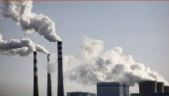

GASES DE EFECTO INVERNADERO
Dióxido de carbono (CO2), Metano (CH4), Compuestos halogenados, Ozono troposférico, Óxido de nitrógeno. Provocados principalmente por la quema de combustibles fósiles para la generación de electricidad, el transporte, la calefacción, la industria y la edificación. También provocados por la ganadería, la agricultura (principalmente el cultivo del arroz), el tratamiento de aguas residuales y los vertederos entre otros. |
 |